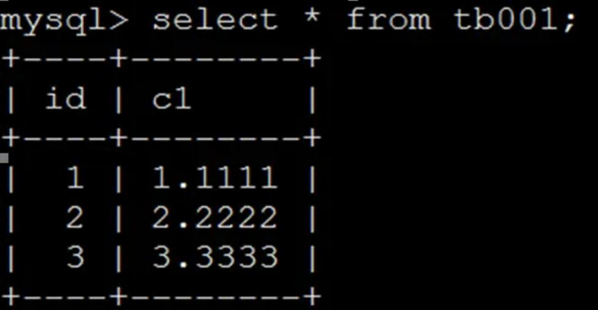
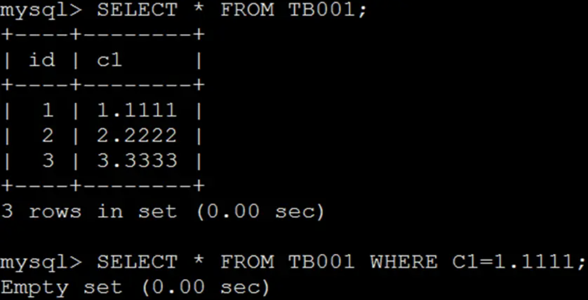
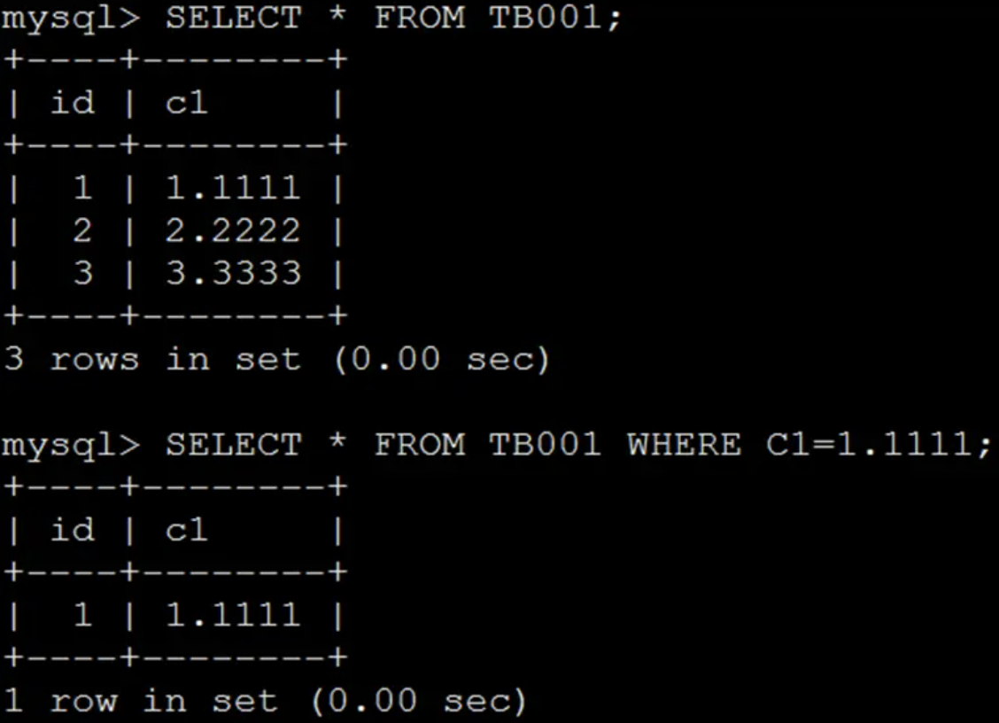
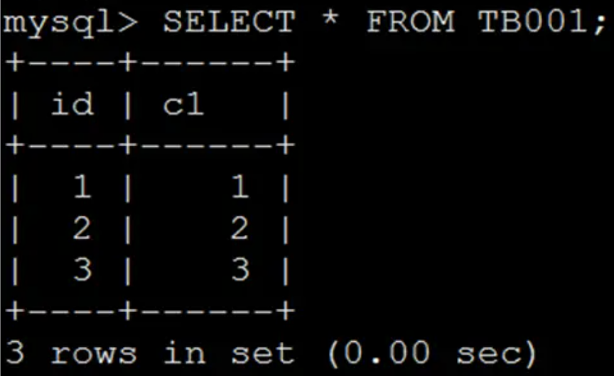
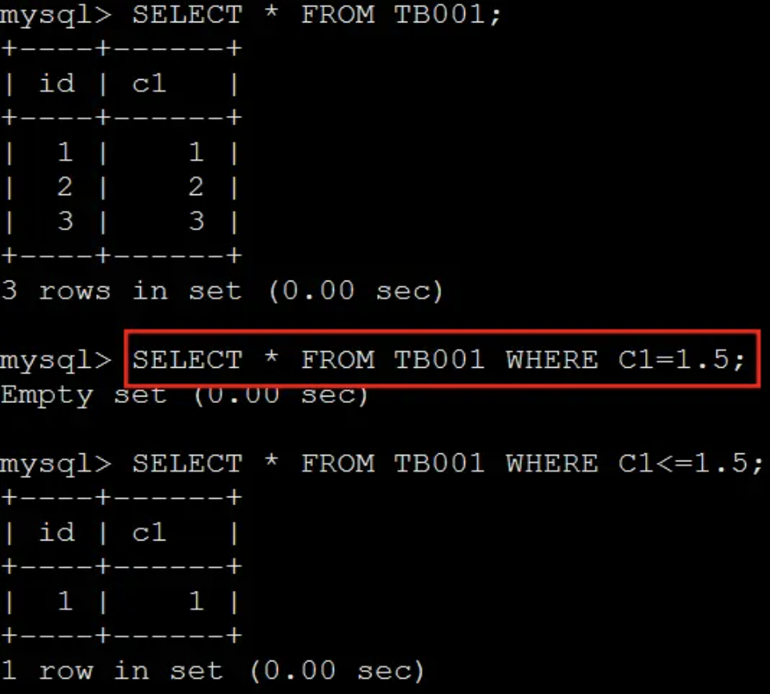
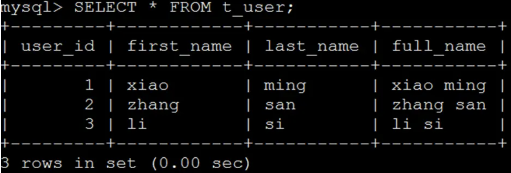
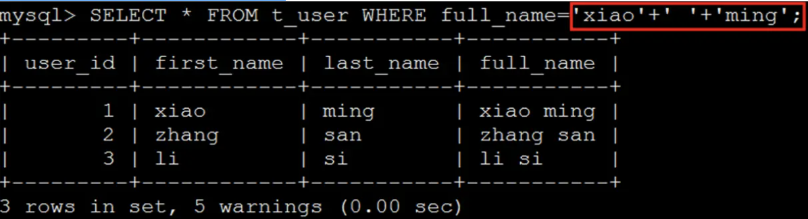

MySQL之隐式类型转换
MySQL之隐式类型转换
假设查询表tb001所有数据得到结果如下：
那么执行SELECT * FROM TB001 WHERE C1=1.1111会是啥结果呢？
- 选项1：返回所有记录
- 选项2：返回id为1的记录
- 选项3：不返回任何记录
- 选项4：以上都不对
这似乎是个送分题，必须选2，真的如此么？
当表结构定义为：
1 | CREATE TABLE `tb001` ( |
那么执行结果为：
因为float类型无法进行精确存储，所以无法进行精准的等值查询。
当表结构定义为：
1 | CREATE TABLE `tb001` ( |
那么执行结果为：
decimal是可以精确存储的，所以可以进行精确的等值查询。
通过上面的测试，发现列的类型不同，会影响到执行结果，那么假设表定于为：
1 | CREATE TABLE `tb001` ( |
查询表tb001所有数据得到结果如下：
那么执行SELECT * FROM TB001 WHERE C1=1.5;会得到什么结果呢？
上面的执行结果虽然有点出乎意料，但是也可以解释，把1.5四舍五入得到2，然后按照C1=2条件得到ID=2的记录。那么将等于改为小于等于呢？即SELECT * FROM TB001 WHERE C1<=1.5;会得到什么结果呢？
可以将上面的查询解释为把1.5强行转换为1，按照C1=1条件得到ID=1的记录。但上面两种解释有点冲突，如何选取呢？难道小于等于不包含等于么？
因为测试表数据仅有3行，全表扫描比索引查找更有效，于是删除C1上索引继续查询。
可以惊奇地发现，查询结果又变了，对于等于查询，到底把1.5转换成什么数据呢？再看另外例子，假设测试数据脚本为：
1 | CREATE TABLE t_user( |
全表数据为：
全表数据为：
然后想按照full_name进行查询：
明明只是想查下全名叫”xiao ming”的用户，为啥全部返回呢？一定是打开方式不对，那么为啥不对呢？
在所有关系型数据库中，每个列都有类型定义，通过CAST或CONVERT函数可以将数据从一种类型转换为另外一种类型，如SELECT CAST('2018-01-01' AS DATETIME),被称为“显式类型转换“。与”显示类型转换“相对的是”隐式类型转换“，在按照时间字段进行查询时，我们通常会直接使用时间字符串作为参数，数据库会自动地将该字符串转换为时间类型，然后再与时间字段进行比较，这便是”隐式类型转换“。
当在MySQL中对两种不同类型数据进行比较或计算时，就会导致类型转换，其中一部分类型转换属于正常操作，另外一部分就属于“异常操作”，如查询条件为WHERE full_name='xiao'+' '+'ming'时，首先在MySQL中字符串不能使用+来连接，只有数值类型才能使用+来进行计算，因此MySQL会尝试把’xiao’/‘ ‘/‘ming’三个字符串转换为数字，转化失败就当做0来处理，因此’xiao’+’ ‘+’ming’的结果为0，然后再把full_name列和0做比较，由于full_name时VARCHAR，而0为数值，因此将full_name列转换为float，再次转换失败当做0来处理，因为0 = 0，所以所有记录都满足。
当发生隐式类型转换且导致数据发生变化丢失时，查询不会抛出异常，仅会产生警告。如果上面的SELECT操作被修改为DELETE操作，则会导致全表数据被删除，忽略这些警告会导致故障被延期发现，从而引发更严重的问题。
MySQL发生隐式转换的规则如下：
- 两个参数至少有一个是 NULL 时，比较的结果也是 NULL，例外是使用 <=> 对两个 NULL 做比较时会返回 1，这两种情况都不需要做类型转换
- 两个参数都是字符串，会按照字符串来比较，不做类型转换
- 两个参数都是整数，按照整数来比较，不做类型转换
- 十六进制的值和非数字做比较时，会被当做二进制串
- 有一个参数是 TIMESTAMP 或 DATETIME，并且另外一个参数是常量，常量会被转换为 timestamp
- 有一个参数是 decimal 类型，如果另外一个参数是 decimal 或者整数，会将整数转换为 decimal 后进行比较，如果另外一个参数是浮点数，则会把 decimal 转换为浮点数进行比较
- 所有其他情况下，两个参数都会被转换为浮点数再进行比较
在上面的测试中，很多查询实际上是因为发生了隐式类型转换，数据被转换为浮点数进行比较，而浮点数最大的问题就是无法精确表示数据，也就无法“正确”地比较两个“浮点数”是否相同。如果表中数值列上有索引，那么即使需要对该列进行类型转换，也能使用索引来“优化查询”，上面示例中会将INT列隐式转换为“float”来进行比较，INT列是否存在索引会导致查询扫描全表数据或部分数据，最终导致查询差异。
当数据列定于为FLOAT且不指定Float的长度和小数位数时，由于Float是浮点数，在MySQL中存储的是近似值，因此无法使用精确查找进行匹配，所以上面示例中WHERE C1=1.1111的执行返回数据为空，查询显示警告信息Empty set.
** float类型无法精确匹配的解决办法：**
- 将Float数据类型转换为Double或Decimal数据类型,Decimal数据类型会保留准确精确度数据，而使用Double时不存在该问题。
- 为Float指定长度和小数位数。
- 使用FORMAT函数进行转换，如
WHERE FORMAT(C1,3)=FORMAT(123.456,3)。 - 使用Like进行匹配,如
WHERE C1 LIKE 123.456。
隐式类型转换与隐式字符编码转换对查询效率的影响
维护一个交易系统，交易记录表tradelog包含交易流水号(tradeid)、交易员id(operator)、交易时间(t_modified)等字段。
1 | create table 'tradelog' ( |
隐式类型转换
1 | select * from tradelog where tradeid = 110717; |
交易编号tradeid字段上本身就有索引。但是explain这条语句后显示，这条语句走的时全表扫描。tradeid 的字段类型是varchar(32)，而输入的参数却是整型，所以需要做类型转换。
字符串与数字做比较的话，将字符串转换成数字。
所以之前的语句被转换成：
1 | select * from tradelog where CAST(tradeid as signed int) = 110717; |
这个会触发规则：对索引字段做函数操作，优化器会放弃走树搜索功能（即不走索引）。
如果我们的语句是如下的：
1 | select * from tradelog where id = "83126"; |
此时不会触发规则。因为字符串和数字比较，会将字符串转换成数字。现在字符串在比较符右边，只会把右边转换成数字，所以不会发生转换，所以仍然走树搜索。
隐式字符编码转换
假设系统里有表trade_detail，用于记录交易细节。我们往交易日志表tradelog和交易详情表trade_detail这两个表里插入一些数据。
1 | mysql> CREATE TABLE `trade_detail` ( |
调用该sql语句：
1 | select d.* from tradelog l,trade_detail d where d.tradeid = l.tradeid and l.id = 2; |
其执行步骤为：
- 根据id在tradelog表里找到L2这一行；
- 从L2中取出tradeid字段的值；根据tradeid值到trade_detail表中查找条件匹配的行；
- 根据tradeid值到trade_detail表中查找条件匹配的行；
该过程是通过遍历主键索引的方式，一个一个地判断tradeid地值是否匹配。
这里的第3步不符合我们的预期，因为trade_detail里tradeid字段是有索引的，我们本来是希望通过使用tradeid索引能够快速定位到等值的行。但是这里显然不是这样做的。
这是因为两个表的字符集不同，一个是utf8，一个是utf8mb4，所以做表连接查询的时候用不上关联字段的索引。
将执行步骤的第三步单独拎出来改成SQL语句：
1 | select * from trade_detail where tradeid = $L2.tradeid.value; |
$L2.tradeid.value的字符集是utf8mb4；utf8mb4是utf8的超集，所以当这两个类型的字符串在做比较的时候，MySQL内部的操作是先将utf8转换成utf8mb4字符集，再做比较。也相当于：
1 | select * from trade_detail where convert(tradeid using utf8mb4) = $L2.tradeid.value; |
这就会触发：对索引字段做函数操作，优化器会放弃树搜索功能。
这就是不同字符集连接查询，关联字段不走索引的原因。
简而言之，一般来说 隐式类型转换 和 隐式字符编码转换 影响数据库查询性能的原因，就是因为在索引上发生了隐式类型转换或者隐式字符编码转换，实质上是在索引字段上需要执行函数，导致优化器不再走索引，最终影响了查询性能。
参考文档：
MySQL tips:隐式类型转换与隐式字符编码转换对查询效率的影响
 微信
微信